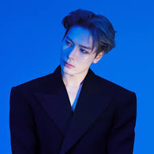

26-year-old Jackson Wang debuted with the South Korean boy group GOT7. Handsome and athletic, he comes from a family of athletes; his parents were national team athletes in fencing and gymnastics, respectively. Growing up surrounded by sports, Jackson Wang also became a fencing athlete, representing the Hong Kong men's fencing team. He won his first fencing gold medal at the National Games at the age of 12.